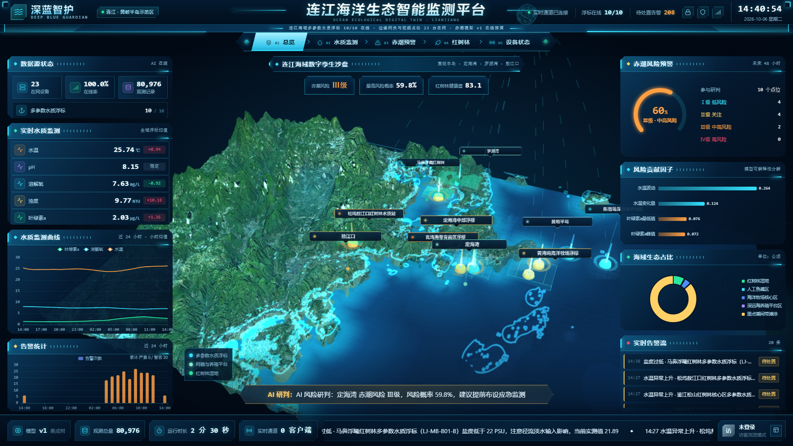
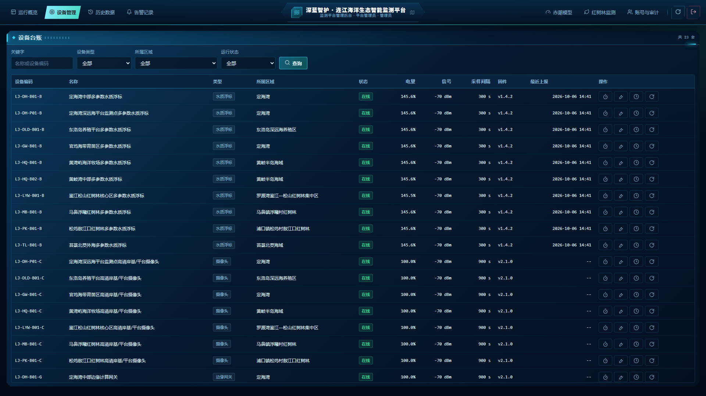

深蓝智护DEEP BLUE GUARDIAN
PROJECT SHOWCASE
01 / 09
LIANJIANG · FUJIAN 连江县海洋牧场与红树林湿地
深蓝智护
连江海洋生态智能监测平台
面向连江县海洋牧场与红树林湿地的软硬件一体化监测平台：多参数水质浮标完成原位采集，LoRa + 4G 双通道回传至边缘网关，云端完成存储、聚合、告警与 AI 赤潮风险分级，最终以海域三维数字孪生大屏与全流程管理后台呈现。
物联网感知
边缘计算
数字孪生
AI 赤潮预警
遥感生态监测
三维数字孪生大屏 · 实时运行

福建省福州市连江县·黄岐半岛 / 定海湾 / 罗源湾 / 敖江口LIANJIANG OCEAN ECOLOGICAL DIGITAL TWIN
深蓝智护DEEP BLUE GUARDIAN
BACKGROUND & PAIN POINTS
02 / 09
连江海域的监测困局
连江海域同时承受陆源排污、养殖自身污染、台风风暴潮与气候变暖的多重压力，是典型的高强度开发与高生态敏感度叠加区域，传统监测手段难以支撑小时级风险预警。
01 巡检成本高
人工乘船采样、送检，单次巡检周期通常 3–7 天，无法发现小时级的突发水质异常，人力与船艇成本长期居高不下。
02 赤潮预警滞后
赤潮主要依赖渔民经验与肉眼观测上报，往往在水色异常时已进入暴发期，错过应急处置窗口。
03 数据孤岛严重
水质参数分散在不同部门与不同厂商系统，量纲与口径不统一，无法统一可视化与横向比对。
04 湿地缺连续观测
红树林保护以季度或年度遥感影像为主，缺少长期连续的多要素监测，退化过程难以被捕捉。
由此确定的三条建设主线
数据从“离散采样”走向“原位连续”浮标原位采集水温、pH、溶解氧、浊度、叶绿素a、盐度，采样间隔 300 秒。
风险从“事后发现”走向“提前研判”用 24 小时时序窗口预测未来 48 小时赤潮风险等级，输出 Ⅰ / Ⅱ / Ⅲ / Ⅳ 四级结果。
监管从“分散台账”走向“一张图管理”海域三维数字孪生 + 统一告警处置闭环 + 红树林遥感期次比对。
数据口径：公开资料与本平台监测数据02 · BACKGROUND
深蓝智护DEEP BLUE GUARDIAN
SENSING LAYER
03 / 09
感知层 · 多参数水质浮标
太阳能供电的原位浮标，集成六项水质传感器与 LoRa 无线回传，布放于海洋牧场网箱区与红树林监测点位，实现 300 秒级连续观测。
浮标结构（自上而下）
太阳能供电模块单晶硅 40 W / 锂电 12 Ah
主控与通信舱STM32 + LoRa SX1278 / 4G 备份
多参数传感器探头组六要素一体化
锚系与配重布放深度 0.5 – 3 m
六项监测指标
叶绿素a 核心预警指标
赤潮生物量的直接代理变量，风险分级依据其未来 48 小时峰值
盐度
河口冲淡水与陆源输入影响，用于校正藻华成因判断
硬件形态：水质浮标原型（太阳能 + 锂电 + LoRa）03 · SENSING
深蓝智护DEEP BLUE GUARDIAN
NETWORK & EDGE
04 / 09
数据链路 · LoRa + 4G 双通道
海上点位以 LoRa 低功耗自组网接入岸边边缘网关，网关经 4G 回传云端；链路中断时本地缓存，恢复后自动断点续传。
LoRa
≤5 km 视距
4G
公网回传
云端平台
FastAPI + SQLite
存储 · 聚合 · 告警
断点续传
网络中断期间数据写入网关本地队列，链路恢复后按时间戳顺序补传，云端自动去重。
异常值剔除
边缘侧对超出传感器量程、相邻点突变的读数标记为可疑或无效，不参与风险计算。
设备心跳
网关周期性上报心跳，超时未上报自动置为离线并生成设备异常告警。
低功耗策略
非采样时段进入休眠，配合太阳能与锂电，支持海上长期无人值守运行。
通信拓扑：浮标 → LoRa → 边缘网关 → 4G → 云端04 · LINK
深蓝智护DEEP BLUE GUARDIAN
DIGITAL TWIN SCREEN
05 / 09
三维数字孪生大屏
左中右三栏3D 海域沙盘实时告警弹窗
连江海域 · THREE.JS 实时渲染
中央 3D 海域沙盘卫星影像底图 + SRTM 地形，标注 10 个浮标点位、网箱分布与红树林斑块。
实时水质监测水温 / pH / 溶解氧 / 浊度 / 叶绿素a / 盐度全域均值与 24 小时曲线。
赤潮风险环形图Ⅰ–Ⅳ 级风险占比，配合 AI 研判横幅实时播报全域风险。
告警弹窗与状态栏越限与模型预警即时弹出，底部状态栏汇总设备在线率与通道状态。
运行地址：/ （全屏大屏）05 · DIGITAL TWIN
深蓝智护DEEP BLUE GUARDIAN
AI RED-TIDE FORECAST
06 / 09
AI 赤潮风险预警
输入 24 小时水质时序窗口，输出未来 48 小时赤潮风险等级，分级依据叶绿素a浓度峰值口径（<5 / 5–10 / 10–20 / ≥20 μg/L）。
模型与测试集指标
算法StandardScaler + GradientBoostingClassifier 多分类，训练样本 16,000 条，测试集 4,000 条。
特征工程（49 维）六项指标的均值 / 波动 / 当前值 / 变化量 / 极值，叠加水温适宜度、盐度适宜度、叶绿素a增长速率、溶解氧亏缺、浊度叶绿素比、季节节律等组合特征。
分级阈值可配置Ⅱ / Ⅲ / Ⅳ 级起点阈值在管理后台在线修改，保存后写入模型配置表并对后续预测立即生效。
特征重要度前 8 项
叶绿素a峰值0.2159
叶绿素a最低值0.1258
叶绿素a当前值0.0911
叶绿素a变化量0.0752
叶绿素a均值0.0579
浊度 / 叶绿素a比0.0307
叶绿素a增长速率0.0277
水温波动0.0251
指标取自模型测试集评估结果；当前训练集为物理仿真数据，接入真实观测数据后可复用同一特征工程与训练流程。
模型版本 red_tide v1 · 窗口 24 h · 预测 48 h06 · AI FORECAST
深蓝智护DEEP BLUE GUARDIAN
MANGROVE MONITORING
07 / 09
红树林遥感变化监测
基于 Sentinel-2 期次影像，融合 NDVI / NDWI / MNDWI / CMRI 决策规则完成红树林斑块分割与两期变化检测，输出面积、健康度与新增 / 减少斑块掩膜。
罗源湾鉴江—松山集中区
320.0ha
健康度 84.6（优） · 面积变化 +0.86%
连片天然红树林湿地，主要建群种为秋茄、桐花树、白骨壤、木榄，是本平台红树林健康度评估的核心样区。
马鼻镇浮曦村红树林
96.4ha
健康度 81.2（良） · 面积变化 +1.42%
位于罗源湾腹部滩涂的核心观赏区，潮滩—红树林复合生境，作为湿地保护与科普展示的重点片区。
浦口镇松坞村敖江口红树林
43.8ha
健康度 76.4（良） · 面积变化 −0.64%
河口区红树林，同时受径流与陆源输入影响，是变化检测中需重点关注幼苗成活率的片区。
分割掩膜输出前期 / 后期二值掩膜，用于面积核算。
变化检测新增斑块与减少斑块分别成图，定位退化位置。
期次追溯按 2026Q1 等期次留存结果，形成连续档案。
影像来源：Sentinel-2 L2A · 期次 2026Q107 · MANGROVE
深蓝智护DEEP BLUE GUARDIAN
MANAGEMENT CONSOLE
08 / 09
管理后台 · 全流程闭环
设备管理历史数据告警记录赤潮模型账号与审计
设备台账 · 23 台在网设备

设备台账与远程指令查询 / 筛选、采样间隔下发、校准、对时、重启与心跳状态跟踪。
历史数据与数据资产多设备对比查询、1 分钟 / 1 小时 / 日均值粒度、CSV 导出与数据质量统计。
告警记录与处置按级别、类型、时间检索，记录处置人、处置备注与抑制次数。
账号与操作审计角色化权限（管理员 / 技术员 / 养殖户 / 访客）与登录、配置变更审计日志。
运行地址：/console08 · CONSOLE
深蓝智护DEEP BLUE GUARDIAN
OUTCOME & VALUE
09 / 09
从数据到决策的闭环
感知、传输、研判、处置四段能力打通，风险发现由“事后上报”转为“提前研判”。
实物成果
多参数水质浮标硬件原型：太阳能供电、六要素传感器、LoRa 回传、IP68 防护，支持海上长期无人值守。
软件成果
三维数字孪生大屏、管理后台、9 组业务接口与后台调度任务，覆盖数据接入、聚合、告警、预测全链路。
算法成果
赤潮四级风险预测模型（49 维特征工程）与红树林遥感分割 / 变化检测算法，权重与元数据随平台版本管理。
应用价值
预警前置赤潮风险提前 48 小时分级预警，为养殖户转移网箱、调整投饵与应急处置留出时间窗口。
降低巡检成本以原位连续观测替代高频人工巡检，异常时段可远程复核，减少无效出海。
蓝碳可核查红树林面积与健康度按期次留档，为生态修复成效核查提供连续、可追溯的数据依据。
深蓝智护 · 连江海洋生态智能监测平台福建省福州市连江县